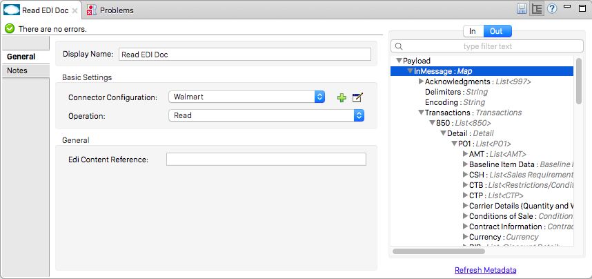

X12 Module
Premium
The X12 Module provides you with the ability to communicate with trading partners using X12 EDI (electronic data interchange).
| This document describes the Mule 3 version of X12. For the Mule 4 version, see the X12 EDI Connector. |
The X12 Module includes:
-
X12 EDI message-reading, message-validation, and message-writing
-
Integration with DataSense and DataWeave
-
X12 message packs for all versions from 0030xx, 0040xx, and 0050xx, and 006020
-
The ability to define your own schemas or customize the base X12 schemas
To get started using the connector, follow these steps:
-
Install the X12 connector.
-
Create schemas to describe your EDI messages according to your implementation.
-
Configure the EDI Module for your trading partner according to your implementation convention.
-
Use the EDI module inside Mule flows.
This page helps provides guidance for each of these steps.
Installation
-
In Anypoint Studio, click the Exchange icon in the Studio taskbar.
-
Click Login in Anypoint Exchange.
-
Search for the connector and click Install.
-
Follow the prompts to install the connector.
When Studio has an update, a message displays in the lower right corner, which you can click to install the update.
Using the X12 Module via Maven
If you want to use the X12 Module in conjunction with Maven, follow the instructions in the As a Maven Dependency section of the Install tab on the Mule EDI Anypoint X12 Connector page.
EDI Schema Language
The X12 Module uses a YAML format called ESL (for EDI Schema Language) to represent EDI schemas. Basic ESLs define the structure of EDI messages in terms of structures (transaction sets, in X12 terminology), groups (loops, in X12), segments, composites, and elements. ESLs for the X12 004010 and 005010 versions are included.
To configure the X12 Module according to your implementation convention, define an overlay schema. An overlay schema is a special form of ESL that allows you to modify a base schema, such as an X12 4010 850 schema, with your specific conventions. (You don’t need an overlay schema if you’re using the structure defined by the standard, but most EDI exchanges modify the base definitions in an implementation convention).
You can also define your own schemas from scratch. See EDI Schema Language Reference for more details.
|
YAML uses a combination of lists and sets of key-value pairs. Order of values is not important, as long as required items are present. Quotes (either single or double quotes) are used around values which may consist of digits but are meant to be interpreted as strings (since otherwise the YAML parser treats the values as numbers). Indentation is used to show the nesting of lists. For readability, the ESL structures shown here define all simple key-value pairs before any lists that are part of the same definition. |
Defining your Implementation Convention with an Overlay Schema
To specify a schema according to your implementation convention, you can follow the following process:
-
Create an "overlay" schema which imports the base schema you want to customize - for example, X12 005010 850
-
Customize the overall structure - segment usage, positions, groups and counts
-
Customize segments - including usage and counts
Overlay schemas are very similar in structure to a complete schema definition, but instead of providing all the details of the schema structure they only list changes. Overlay schemas specify how to use implementation conventions with a particular trading partner to extend and customizes the standard.
By way of example, here’s the start of a sample overlay schema modifying the basic X12 005010 850 transaction set definition. This sample customizes the CUR segment and specifies that it is unused - thereby ensuring that it doesn’t show up in the mapping structures in Studio.
form: X12
version: '005010'
imports: [ '/x12/005010/850.esl' ]
structures:
- idRef: '850'
name: Purchase Order
class: PO
heading:
- { idRef: 'CUR', position: '0400', usage: U }Structure Overlay
A structure overlay details modifications to the base schema definition of an X12 transaction set. Most often these modifications take the form of marking segments or groups in the base definition as unused, but any usage or repetition count change is allowed. Here’s the form taken by a structure overlay:
- idRef: '850'
heading:
- { idRef: 'CUR', position: '0400', usage: U }
- { idRef: 'PER', position: '0600', usage: U }
- groupIdRef: 'N9_Loop'
position: '2950'
items:
- { idRef: 'DTM', position: '2970', usage: U }
- { idRef: 'PWK', position: '3050', usage: U }
- { idRef: 'EFI', position: '3080', usage: U }The modifications in this example specify that the CUR and PER segments of the standard 850 heading are not being used, along with the segments in the N9 group (or in X12 terms, loop).
The key-value pairs at the structure level are:
| Key | Description |
|---|---|
idRef |
The ID for the transaction set being modified. |
name |
The transaction set name (optional). |
heading, detail, summary |
List of segment and group modifications within each section of the structure (optional, each is only used when there are modifications to that section). |
The lists of segment modifications for the different sections of the structure (heading, detail, summary) all use the same structure. Each item in the list is either a segment reference or a group definition. Segment references are shown using a compact YAML syntax where the values for each reference are given as comma-separated key-value pairs enclosed in curly braces. The values are:
| Key | Description |
|---|---|
idRef |
The referenced segment ID (optional, verified if provided but otherwise ignored – the position value is used to uniquely identify segments within the section). |
position |
The segment position within the transaction set section. |
usage |
Usage code, which may be M for Mandatory, O for Optional, C for Conditional, or U for Unused (optional, base definition value used if not specified). |
count |
Maximum repetition count value, which may be a number or the special value |
Group overlays are shown in expanded form, with key-value pairs on separate lines. The values in a group definition are:
| Key | Description |
|---|---|
groupIdRef |
The referenced group id (optional, verified if provided but otherwise ignored – the position value is used to uniquely identify a group within a section). |
position |
The segment position within the transaction set section. |
usage |
Usage code, which may be M for Mandatory, O for Optional, C for Conditional, or U for Unused. |
count |
Maximum repetition count value, which may be a number or the special value |
items |
List of segments (and potentially nested loops) making up the loop. |
Segment Overlays
A segment overlay again details modifications to the base schema definition. Most often these modifications take the form of marking elements or composites in the base definition as unused, but any usage or repetition count change is allowed. Here are some sample segment overlays:
segments:
- { idRef: AMT, trim: 3 }
- idRef: BEG
items:
- { position: 4, usage: U }
- { idRef: DTM, trim: 3 }
- idRef: ITD
items:
- { position: 4, usage: U }
- { position: 6, usage: U }The above example uses the compact form for segment modifications that only involve a truncate, while modifications that make changes to individual values are expressed in expanded form. As with all the other YAML examples, the two forms are actually equivalent and can be used interchangeably.
The key-value pairs in a segment overlay are:
| Key | Description |
|---|---|
idRef |
Segment identifier. |
trim |
Trim position in segment, meaning all values from this point on are marked as unused (optional). |
items |
List of individual value modifications. |
The items list references values in the segment by position. The values for these references are:
| Key | Description |
|---|---|
position |
The value position within the segment. |
name |
The name of the value in the segment (optional, base definition value used if not specified) |
usage |
Usage code, which may be M for Mandatory, O for Optional, C for Conditional, or U for Unused (optional, base definition value used if not specified). |
count |
Maximum repetition count value, which may be any number or the special value |
Determining the X12 Schema Location
To use the connector, you need to know the locations of the schemas in your project. If you’re using the out of the box X12 schemas and not customizing anything, the schema location follows the /x12/{version}/{transaction-set}.esl pattern. For example, if you’re using the 005010 version and the 850 transaction set, your schema location is /x12/005010/850.esl.
If you’re creating a custom implementation convention, you should put your schemas under a directory in src/main/app and refer to the location using ${app.home}. For example, if you’ve put your 850 schema under src/main/app/mypartner/850.esl, your schema location is ${app.home}/mypartner/850.esl.
Configuring the X12 Module
After you install the connector and configure your schema customizations (if any), you can start using the connector. Create separate configurations for each implementation convention.
[tab,title="Studio Visual Editor"]
....
Follow these steps to create a global X12 module configuration in a Mule application:
. Click the *Global Elements* tab at the base of the canvas, then click *Create*.
. In the *Choose Global Type* wizard, use the filter to locate and select, *X12 Module*, then click *OK*.
+
image:x12-module-3.png[x12-module-3]
+
. Configure the parameters according to the connector reference.
. Click *OK* to save the global connector configurations.
. Return to the *Message Flow* tab in Studio.
....
[tab,title="XML Editor or Standalone"]
....
Ensure that you have included the EDI namespaces in your configuration file.
[source, code, linenums]
----
segments:
- { idRef: AMT, trim: 3 }
- idRef: BEG
items:
- { position: 4, usage: U }
- { idRef: DTM, trim: 3 }
- idRef: ITD
items:
- { position: 4, usage: U }
- { position: 6, usage: U }
----
Follow these steps to configure a EDI module in your application.
. Create a global ServiceNow configuration outside and above your flows, using the following global configuration code.
+
[source, xml, linenums]
----
<x12-edi:config name="MyTradingPartner" doc:name="EDI" interchangeIdQualifierSelf="01" interchangeIdSelf="ABCDEFG" groupIdSelf="ABC123" interchangeIdQualifierPartner="01" interchangeIdPartner="HIJKLMN" groupIdPartner="DEF456">
<x12-edi:schemas>
<x12-edi:schema>/x12/005010/850.esl</x12-edi:schema>
<x12-edi:schema>/x12/005010/855.esl</x12-edi:schema>
</x12-edi:schemas>
</x12-edi:config>
----
+
. Configure the connector according to your implementation convention using the guide below.
....
After you set up a global element for your X12 module, configure the schemas, acknowledgments, IDs, and the parser options. A reference for these options is located in the EDI module reference.
Setting Your Schema Locations
You can only configure schema locations in the Anypoint Studio XML view. The schema files are loaded when the connector is initialized, thus runtime expressions such as flow variables are not supported.
Using the schema locations determined above, switch to the XML view by clicking Configuration XML in Studio and modify your X12 module configuration to include a list of all the schemas you wish to include by adding an edi:schema element for each document type:
<x12-edi:config name="MyTradingPartner" doc:name="EDI" interchangeIdQualifierSelf="01" interchangeIdSelf="ABCDEFG" groupIdSelf="ABC123" interchangeIdQualifierPartner="01" interchangeIdPartner="HIJKLMN" groupIdPartner="DEF456">
<x12-edi:schemas>
<x12-edi:schema>/x12/005010/850.esl</x12-edi:schema>
<x12-edi:schema>/x12/005010/855.esl</x12-edi:schema>
</x12-edi:schemas>
</x12-edi:config>Setting your X12 Interchange IDs
You can configure the interchange ID, interchange ID qualifier, and group application ID for you and your trading partner on the X12 Module connector configuration.
The "Self identification" parameters identify your side of the trading partner relationship, while the "Partner identification" parameters identify your trading partner. The values you set are used when writing EDI messages to supply the interchange ID, interchange ID qualifier, or group application ID, and are verified in receive messages. If you don’t want to restrict incoming messages you can leave these blank, and set the values for outgoing messages on the write operation or the actual outgoing message. Values set on the write operation overrides the connector configuration, and values set directly on the message overrides both the connector configuration and any values set on the write operation.
Understanding X12 Message Structure
The connector enables reading or writing of X12 documents into or from the canonical EDI message structure. This structure is represented as a hierarchy of Java Maps and Lists, which can be manipulated using DataWeave or code. Each transaction has its own structure, as defined in the schemas, as outlined above.
The message itself contains the following keys (some of which only apply to either the read operation or the write operation, as indicated):
| Key name | Description |
|---|---|
Delimiters (optional) |
The delimiters used for the message (set based on the last interchange processed by a read operation). If set for a write operation this overrides the values in the module configuration. The characters in the string are interpreted based on position, in the following order: (data separator), (sub-element separator), (repetition separator, or 'U' if none), (segment terminator). |
Errors (read only) |
A list of errors which are associated with the input as a whole, or with interchanges with no valid transaction sets. (See the X12Error structure description in the Reading and Validating EDI Messages section below.) |
FunctionalAcksGenerated (read only) |
A list of 997 or 999 acknowledgments (as configured) that were generated by the module during the read operation. To send an acknowledgment, see the Sending Acknowledgments section below. |
Group (write only) |
Map of GS group header segment values used as defaults when writing groups. |
Interchange (write only) |
Map of ISA interchange header segment values used as defaults when writing interchanges. |
InterchangeAcksGenerated (read only) |
A list of TA1 acknowledgments that were generated by the module during the read operation. |
InterchangeAcksReceived (read only) |
A list of TA1 acknowledgments that were received by the module during the read operation. |
InterchangeAcksToSend (write only) |
A list of TA1 acknowledgments that are to be sent by the module during the write operation. |
Transactions |
A hierarchy of the transaction sets which were read by the module during a read operation, or which are to be sent by the module during a write operation. The value of this top-level key is a map with standard versions as keys, in the form "v005010" (for instance). For example, if you are using version 005010 850 and 855 transaction sets, the Transactions would contain a map with on key, "v005010". The value of this key would be another map, this one with two keys, "850" and "855". Each of these would contain a list of individual 850 and 855 transaction sets that you could then process. If you’re using 997 functional acknowledgments "997" is the key for a list of 997 transaction sets. |
Individual transaction sets have their own maps, with the following keys:
| Key name | Description |
|---|---|
Detail |
Map of segments or loops from the detail section of the transaction set. Values are maps for segments or loops which occur at most once, lists of maps for values which may be repeated. |
Errors (read only) |
A list of errors which are associated with the transaction set. (See the X12Error class description in the [Reading and Validating EDI Messages] section below.) |
Group |
Map of GS group header segment values. When reading a message, this map is the actual data from the enclosing group (a single map linked from all transaction sets in the group). When writing a message, these values are used for creating the enclosing group Values not populated in this map default to the values from the Group map at the message level. |
Heading |
Map of segments or loops from the heading section of the transaction set. Values are maps for segments or loops which occur at most once, lists of maps for values which may be repeated. |
Id |
Transaction ID, which must match the key of the containing transaction list. |
Interchange |
Map of ISA interchange header segment values. When reading a message, this map is the actual data from the enclosing interchange (a single map linked from all transaction sets in the interchange). When writing a message, these values are used for creating the enclosing interchange (gathering transactions with the same interchange values into a single interchange, regardless of whether the actual maps are the same or not). Values not populated in this map default to the values from the Interchange map at the message level. |
Name |
Transaction set name. |
SetHeader |
Map of ST transaction set header segment values. This gives the actual header data for a read operation, and allows you to provide overrides for configuration settings for a write operation. |
Summary |
Map of segments or loops from the summary section of the transaction set. Values are maps for segments or loops which occur at most once, lists of maps for values which may be repeated. |
Generated 997/999 functional acknowledgment transactions differ from received messages in their handling of interchange information:
| Key name | Description |
|---|---|
Interchange |
Map of ISA interchange header segment values. For functional acknowledgments generated by receive processing, this map is a copy of the data for the containing interchange with sender and receiver identification components (ISA05/ISA06 and ISA07/ISA08) interchanged. When writing a message, these values are used for creating the enclosing interchange (gathering transactions with the same interchange values into a single interchange, regardless of whether the actual maps are the same or not). Values not populated in this map default to the values from the Interchange map at the message level. |
TA1 interchange acknowledgments are in the form of maps representing the TA1 segment data and linked to data on the corresponding interchange:
| Key name | Description |
|---|---|
Interchange |
Map of ISA interchange header segment values. For TA1 acknowledgments generated by receive processing, this map is a copy of the data for the interchange matching the TA1 with sender and receiver identification components (ISA05/ISA06 and ISA07/ISA08) interchanged. When writing a message, these values are used for creating the enclosing interchange (gathering transactions with the same interchange values into a single interchange, regardless of whether the actual maps are the same or not). Values not populated in this map default to the values from the Interchange map at the message level. |
Time Fields
All X12 Time fields are represented as Integer values for the number of milliseconds.
For example, if a message has the value 024020, its Dataweave mapping
appears as 9620000 milliseconds.
The value 024020 is in the format "HHMMSS", so if we convert it to milliseconds, we need to do:
(02*3600000) + (40*60000) + (20*1000) = 9620000Reading and Validating X12 EDI Messages
To read an X12 message, search the palette for "X12 EDI" and drag the X12 module into a flow. Then, go to the properties view, select the connector configuration you created above and select the "Read" operation. This operation reads any byte stream into the structure described by your X12 schemas.
The X12 module validates the message when it reads it in. Message validation includes checking the syntax and content of envelope segments ISA, GS, GE, and IEA as well as the actual transaction sets in the message. Normally errors are both logged and accumulated and reported in either TA1 technical acknowledgment segments or 997 acknowledgment transaction sets, and all accepted transaction sets (whether error free or with non-fatal errors) are passed on for processing as part of the output message Map. Errors in reading the input data results in exceptions being thrown.

Error data entered in the receive data map uses the X12Error class, a read-only JavaBean with the following properties:
| Property | Description |
|---|---|
segment |
The zero-based index within the input of the segment causing the error. |
segTag |
The tag for the segment causing the error. |
fatal |
Flag for a fatal error, meaning the associated transaction set, group, or interchange was rejected as a result of the error. |
errorType |
Enumeration for the different types of errors defined by the X12 standards: INTERCHANGE_NOTE, GROUP_SYNTAX, TRANSACTION_SYNTAX, SEGMENT_SYNTAX, or ELEMENT_SYNTAX. |
errorCode |
Error code, as defined by the X12 standard for the indicated type of error. |
errorText |
Text description of the error. |
errorLevel |
Enumeration for the different levels of errors: ROOT_LEVEL, INTERCHANGE_LEVEL, GROUP_LEVEL, or TRANSACTION_LEVEL. |
interchangeId |
Interchange identifier, if errorLevel INTERCHANGE_LEVEL or above. |
groupId |
Group identifier, if errorLevel GROUP_LEVEL or TRANSACTION_LEVEL. |
transactionId |
Interchange identifier, if errorLevel TRANSACTION_LEVEL. |
Error data is returned by the read operation as optional lists with the "Errors" key at every level of the data structure. At the transaction set level, this list contains non-fatal errors encountered during the parsing of that transaction set. At the interchange level, this list contains errors (both fatal and non-fatal) for transaction sets with fatal errors. At the root level of the read, this list contains both interchange errors and every other error reported at any nested level.
Writing X12 EDI Messages
To write an outgoing message, construct an outgoing X12 EDI message according to the structure as defined above. For example, this sample creates an outgoing EDI message which is written to a file.
...
<x12-edi:write config-ref="Walmart" doc:name="Send 855"/>
<file:outbound-endpoint responseTimeout="10000" doc:name="File" path="output" outputPattern="ack.edi"/>Sending Functional Acknowledgments
Sending generated functional acknowledgments (997 or 999 transaction sets) is the same as writing any other EDI message, except you set the transactions to the acknowledgments that were generated during the read operation. For example:
<x12-edi:read config-ref="Walmart" doc:name="Read EDI Doc"/>
...
<dw:transform-message doc:name="Create Outgoing Message">
<dw:input-payload doc:sample="InMessage.dwl"/>
<dw:set-payload><![CDATA[%dw 1.0
%output application/java
---
{
TransactionSets: {
v005010: {
'997' : payload.FunctionalAcksGenerated
}
}
}]]></dw:set-payload>
</dw:transform-message>
<x12-edi:write config-ref="Walmart" doc:name="Send 997"/>
<file:outbound-endpoint responseTimeout="10000" doc:name="File" path="output" outputPattern="ack.edi"/>The generated functional acknowledgments have interchange data set up for sending back to the sender of the original message, so you don’t need to change anything in the transactions in order to do the send.
If you use 999 acknowledgments, add any required CTX segments yourself to the basic structure generated by the X12 Module (currently it does not track implementation convention changes to the base transaction set structure).
Sending Interchange Acknowledgments
To send interchange acknowledgments (TA1 segments), just set the value of the InterchangeAcksToSend key in the message map to the list of TA1 segment maps to be sent. The generated TA1 segments have interchange data set up for sending back to the sender of the original message, so you don’t need to change anything in the segment data in order to do the send.